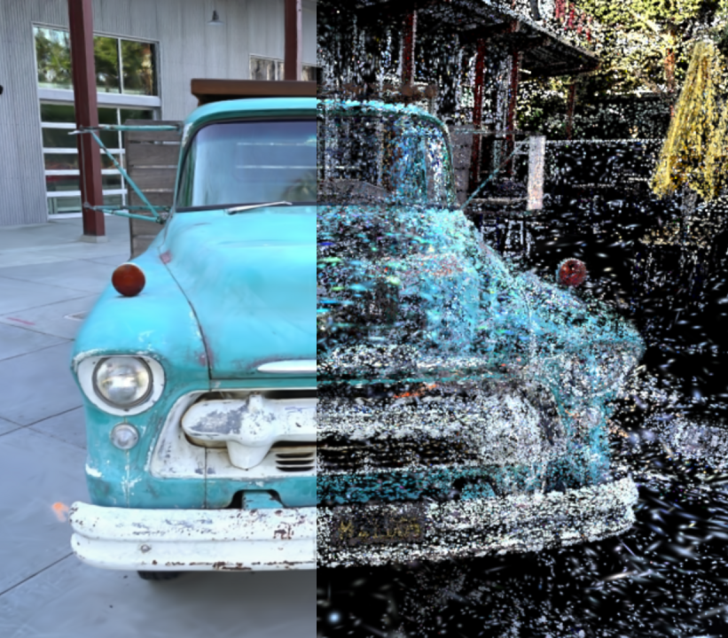
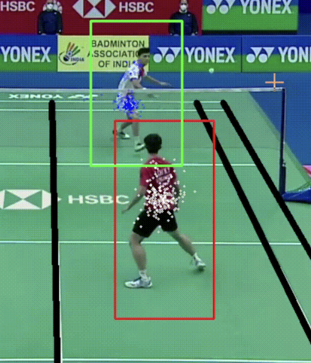

Hi there! I’m all about bringing ideas to life with computer vision, LLMs, and deep learning.
From addressing real-world challenges in healthcare to creating impactful solutions for clients, I’ve had a
blast blending tech and creativity. I’m a big fan of AI, designing,
and coding—basically, anything that lets me innovate and make life a little cooler!
M
Masters of Science in Applied Computing with spl. in Artificial Intelligence
University of Toronto
2023 - 2025
B
Bachelors of Technology in Computer Science and Engineering and Business Systems
Developed a real-time “pocket comedian” app using Audio LLMs, Flask, and Socket.IO for seamless speech-to-speech comedic interactions. It leverages the Higgs Audio Understanding Model, Qwen3, and Higgs Audio TTS for context-aware, expressive responses. Features include selectable comedian voices, multiple comedic modes, multi-turn conversation memory, and support for Mandarin and French input/output.
Ink-to-Tint: Manga Artisan
An automated system for manga colorization and style conversion to
enhance readability and ease artists' workload. Implements a
Pix2Pix conditional GAN in PyTorch with a CNN-based discriminator and U-Net
generator for colorizing black-and-white manga pages. Fine-tunes a pre-trained
Stable Diffusion model for manga style transfer across four distinct art styles.
Optimized LLM Modeling: Classification and Instruction Fine-Tuning
Integrated attention mechanism alongside KV cache optimizations to improve model efficiency. Experimented with positional embedding strategies in Transformers to enhance model performance. Implemented classification and instruction fine-tuning using diverse prompt styles and data processing techniques. Successfully deployed models on AWS Sagemaker through Docker containers and an MLOps pipeline for automated training, validation, and deployment. Built a RAG Agent for Pokemon Battle Analysis using LangChain and Streamlit App.

Text-based 3D Gaussian Splatting
Object
Segmentation
A Python-based 3D Gaussian Splatting segmentation model that leverages LangSAM
for
text-driven 3D segmentation. Incorporates an optimized prompt initialization
strategy using K-means clustering for efficient view selection and point
sampling.
Reduces computational requirements by achieving near-optimal results with only
50%
of the input data.

Qualitative Badminton Player
Analysis
A computer vision system for tracking player movements and classifying badminton
strokes in broadcast videos. Utilizes Particle Filter and custom jersey color
detection for player tracking with 99% accuracy. Predicts badminton strokes
using CNNs with 81% accuracy. Detects court boundaries through image
binarization, edge detection, Hough Lines, and K-Means clustering.
Handwritten Polynomial Equation
Solver
A Flask-based web application with HTML and CSS for solving image-based
handwritten polynomial equations. Performs image segmentation and preprocessing
to isolate numerical values and symbols. Implements a CNN model using
TensorFlow-Keras and OpenCV to detect handwritten numbers and symbols with 98%
accuracy, enhancing usability for students.
Projects
Pocket Comedian: BosonAI Hackathon Winner
Developed a real-time “pocket comedian” app using Audio LLMs, Flask, and Socket.IO for seamless speech-to-speech comedic interactions. It leverages the Higgs Audio Understanding Model, Qwen3, and Higgs Audio TTS for context-aware, expressive responses. Features include selectable comedian voices, multiple comedic modes, multi-turn conversation memory, and support for Mandarin and French input/output.
Ink-to-Tint: Manga Artisan
An automated system for manga colorization and style conversion to
enhance readability and ease artists' workload. Implements a
Pix2Pix conditional GAN in PyTorch with a CNN-based discriminator and U-Net
generator for colorizing black-and-white manga pages. Fine-tunes a pre-trained
Stable Diffusion model for manga style transfer across four distinct art styles.
Optimized LLM Modeling: Classification and Instruction Fine-Tuning
Integrated attention mechanism alongside KV cache optimizations to improve model efficiency. Experimented with positional embedding strategies in Transformers to enhance model performance. Implemented classification and instruction fine-tuning using diverse prompt styles and data processing techniques. Successfully deployed models on AWS Sagemaker through Docker containers and an MLOps pipeline for automated training, validation, and deployment. Built a RAG Agent for Pokemon Battle Analysis using LangChain and Streamlit App.
Text-based 3D Gaussian Splatting Object Segmentation
A Python-based 3D Gaussian Splatting segmentation model that leverages LangSAM
for
text-driven 3D segmentation. Incorporates an optimized prompt initialization
strategy using K-means clustering for efficient view selection and point
sampling.
Reduces computational requirements by achieving near-optimal results with only
50%
of the input data.
Qualitative Badminton Player Analysis
A computer vision system for tracking player movements and classifying badminton
strokes in broadcast videos. Utilizes Particle Filter and custom jersey color
detection for player tracking with 99% accuracy. Predicts badminton strokes
using CNNs with 81% accuracy. Detects court boundaries through image
binarization, edge detection, Hough Lines, and K-Means clustering.
Handwritten Polynomial Equation Solver
A Flask-based web application with HTML and CSS for solving image-based
handwritten polynomial equations. Performs image segmentation and preprocessing
to isolate numerical values and symbols. Implements a CNN model using
TensorFlow-Keras and OpenCV to detect handwritten numbers and symbols with 98%
accuracy, enhancing usability for students.
Research
Histology Classification for Early Gastric Cancer using AI Model
Conference: Society of American
Gastrointestinal and Endoscopic Surgeons (SAGES) 2025
Author(s): Hoseok Seo, Anannya Popat, Caterina
Masino, Sojung Kim, Han Hong Lee, Kyo Young Song, Amin Madani
Fine-tuned ResNet50 model to classify histologic types in early
gastric cancer from endoscopic images. Preprocessed a dataset of 2,944 labeled images,
achieving 91% specificity for undifferentiated types and 87% specificity for differentiated type.
An image-based movie genre classification algorithm leveraging Federated Learning to ensure data
privacy in graphics industry. Designed a decentralized architecture with 81% accuracy for local
CNN training with distributed data, reducing storage requirements and ensuring privacy.
This paper introduces a web-based system that uses an enhanced Inception V4 CNN to recognize and
solve handwritten polynomial equations (cubic, quadratic, and quintic) by determining the value
of
𝑥
x. The model is trained on data from MathNet (arithmetic symbols), MNIST (digits), and EMNIST
(alphabet characters).
Proposed a privacy-preserving approach using Federated Learning and auto-encoding to train a
camera filter for generating sketched representations of images. The method ensures data
security while leveraging the CUFS database for training, addressing privacy
concerns in applications like medical imaging, remote sensing, and e-commerce.
Implemented a Federated Learning (FL) approach for privacy-preserving music genre classification
using CNNs and the GTZAN dataset. The method ensures data discretion and copyright protection
for music corporations in large-scale collaborative machine learning projects.


 Python
Python
 R
R
 Java
Java
 C/C++
C/C++
 SQL
SQL
 HTML
HTML
 CSS
CSS
 JavaScript
JavaScript
 PyTorch
PyTorch
 TensorFlow
TensorFlow
 OpenCV
OpenCV
 Scikit-Learn
Scikit-Learn
 Flask
Flask
 Jupyter
Jupyter
 Pandas
Pandas
 NumPy
NumPy
 Git
Git
 NiBabel
NiBabel
 AWS
AWS
 Docker
Docker
 LangChain
LangChain
 Streamlit
Streamlit
 Visualization Toolkit
Visualization Toolkit
 Blender
Blender
 Figma
Figma